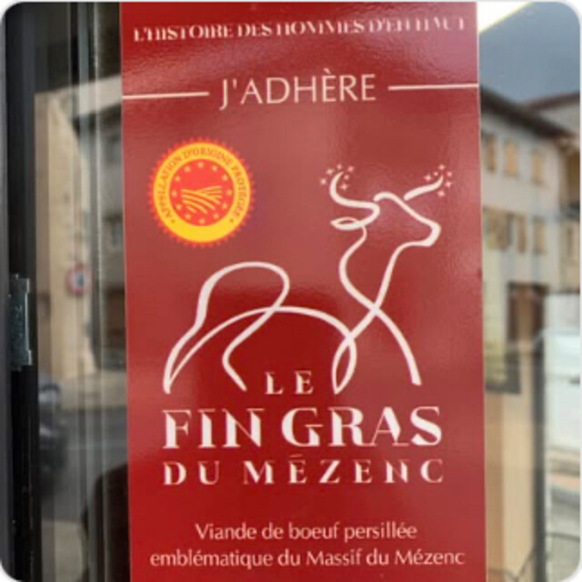

Le Fin Gras du Mézenc
La viande de bœuf persillée, emblématique du massif du Mézenc. Une saison courte, que la boutique propose chaque année.

Un bœuf de montagne, persillé
« Viande de bœuf persillée, emblématique du Massif du Mézenc. »
Le Fin Gras du Mézenc est un bœuf élevé dans le massif du Mézenc, au sud-est de la Haute-Loire. Sa viande est finement persillée : le gras se glisse entre les fibres et donne une chair tendre et parfumée.
La boutique adhère à l'appellation, comme le montre l'affiche collée sur sa vitrine. C'est un produit de saison, que l'on trouve sur une période courte du printemps.
Ce qui fait le Fin Gras
Quatre mots pour comprendre pourquoi on le réserve.
Un massif
Le Mézenc, à cheval sur la Haute-Loire et l'Ardèche, sa montagne et ses prairies d'altitude.
Un foin
Des bœufs nourris à l'herbe, puis au foin du massif pendant l'hiver, avant d'arriver au comptoir.
Un persillé
Un gras fin, réparti dans la viande, qui rend la cuisson indulgente et le goût marqué.
Une saison
Une période courte au printemps. Demandez-nous les dates et les morceaux disponibles.
Le cuire sans le brusquer
Un morceau persillé n'a pas besoin de grand-chose. Sortez-le du froid une demi-heure avant, saisissez-le à la poêle ou au grill, salez à la fin et laissez-le reposer.
Entrecôte, faux-filet, côte de bœuf ou rôti : on vous conseille au comptoir selon le nombre de convives.
Voir les morceaux du bœufSe renseigner sur l'appellation
La liste des bouchers qui proposent le Fin Gras du Mézenc est publiée sur le site de l'appellation. La boucherie Eric Loubet y adhère, il suffit de nous demander s'il est disponible.
Appelez le 04 71 59 40 28 ou passez à la boutique.